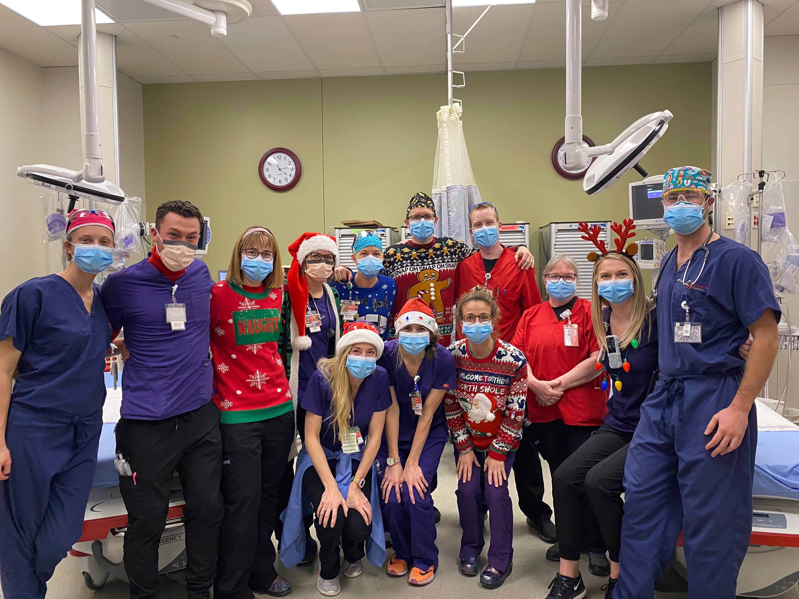
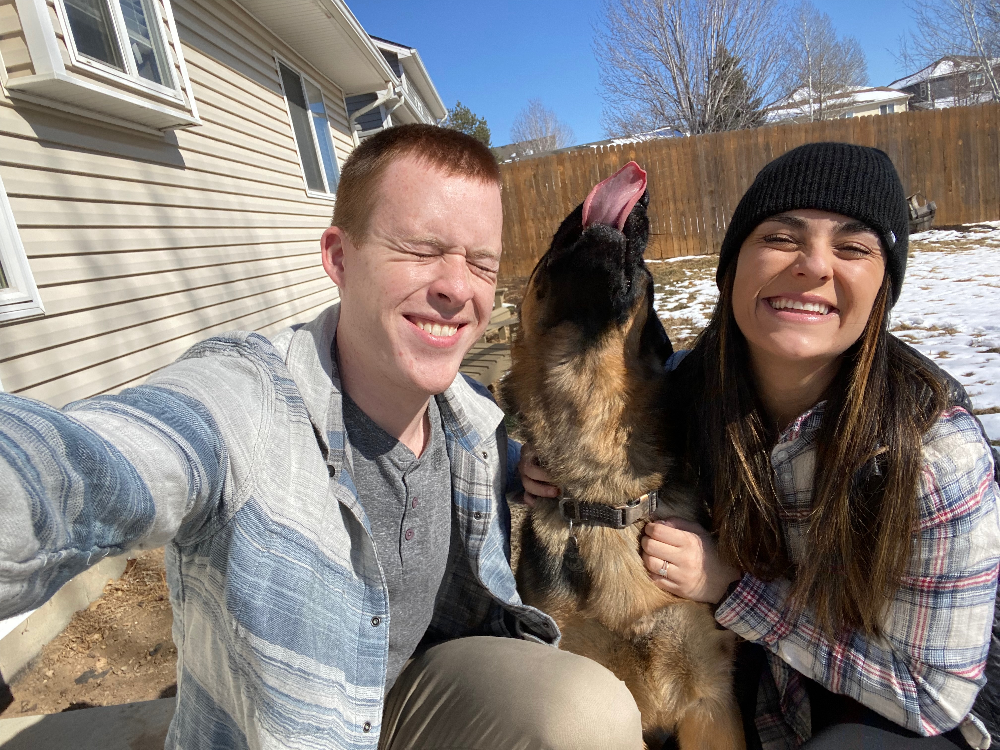

Software Engineer
Ingredient Cart Ingredient Cart is a work-in-progress full stack application that allows users to automatically input items into their pick-up grocery cart (Kroger only, currently) by simply inserting the url of a recipe website. This project is in its early stages. Future directions for this project are to include a machine learning model that can intelligently scrape recipe websites, instead of having to rely on a script. Check it out here!
The programmed death ligand 1 interactome demonstrates bidirectional signaling coordinating immune suppression and cancer progression in head and neck squamous cell carcinoma
Link to publicationDescription: In oncology, there is a heuristic tool called the Hall Marks of Cancers. These define certain characteristics that make cells, cancer cells. These include things like continual cell growth and division, metastasis, and resistance of cell death, among others. This publication was focused on more well defining a clinical immunotherapy drug, Keytruda (Pembrolizumab), and it's effects on these hallmarks. These data produced had interesting findings, that will allow clinicians to make more informed treatment plans that will improve patient outcome.
The Hec1/Ndc80 tail domain is required for force generation at kinetochores, but is dispensable for kinetochore–microtubule attachment formation and Ska complex recruitment
Link to publicationDescription: Despite having a large reservoir of biological knowledge, there are still many unknowns about how life works. Research like this publication uncover those mysteries so we can dig deeper into why things are the way they are. The intent of this research was to characterize the amino acid sequence of a specific protein involved in cell division, specifically the cellular machinery that attaches microtubule spindles to the chromosomes during metaphase and anaphase. In short, we found a specific region of the protein that was thought to recruit helper proteins(ska), did not actually have that effect. We also found this region has regulation factors, lastly we found the region that is responsible for ska recruitment.
I would not have reached these accomplishments without the amazing mentors and teammates I have had along the way - I would like to specifically mention Cera Nieto, Rob Wimbish, Emma Shay-Heuth, the Jimeno Lab, and the DeLuca Lab.
Hello, thanks for looking through my website! I'm Jack, and I'm passionate about leveraging technology to make a meaningful impact in people's lives. Since I can remember, I've been captivated by the boundless potential of technology and its ability to drive positive change.
My journey began with a biochemistry degree, where I explored various career paths, seeking opportunities to fulfill my aspirations. Initially drawn to research, I immersed myself in laboratory work, achieving notable milestones along the way. However, I soon realized my desire for more direct interaction with those I aimed to help, sparking my interest in the medical field. Transitioning into healthcare as an EMT, I navigated challenging environments, gaining invaluable experience and insights. Despite my acceptance into PA school, I recognized the need for balance and sought a new avenue to merge my passion for technology with my desire to make a difference. This pursuit led me to a coding boot camp, where I embraced the opportunity to expand my skill set. Completing the program and securing a position as a full-stack software engineer at Custom Ink, I continued to push myself, achieving growth and advancement in my role.
Through my diverse experiences, I've cultivated a robust skill set and a hunger for continuous learning. I thrive in collaborative environments, excel under pressure, and adapt quickly to new challenges. Above all, I've honed the invaluable skill of learning how to learn, empowering me to tackle any obstacle with confidence.
Outside of work, you'll find me enjoying the great outdoors with my wife and dog, playing soccer, indulging in board games, and exploring new hobbies. I'm always eager to connect and nerd out over shared interests, so don't hesitate to reach out!
Email me! I'd be glad to chat about tech, careers, science, or really aynthing else!